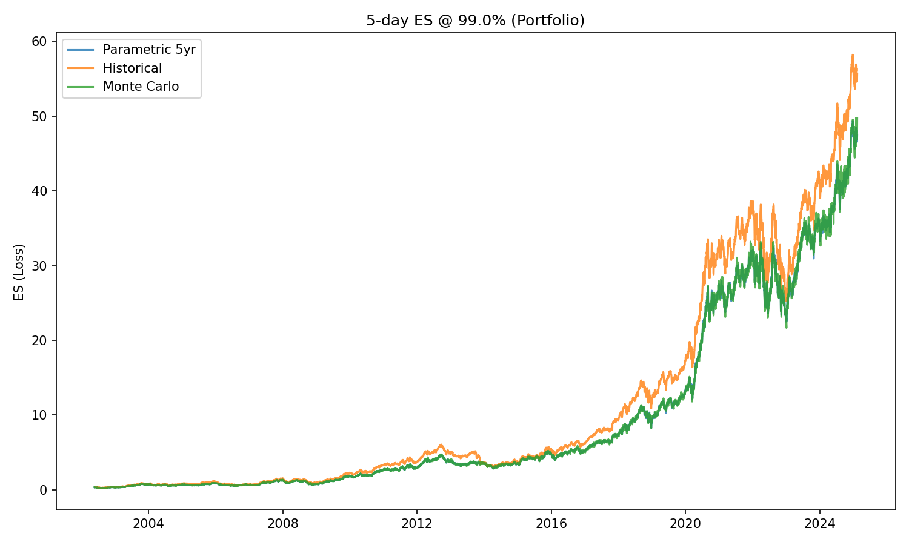
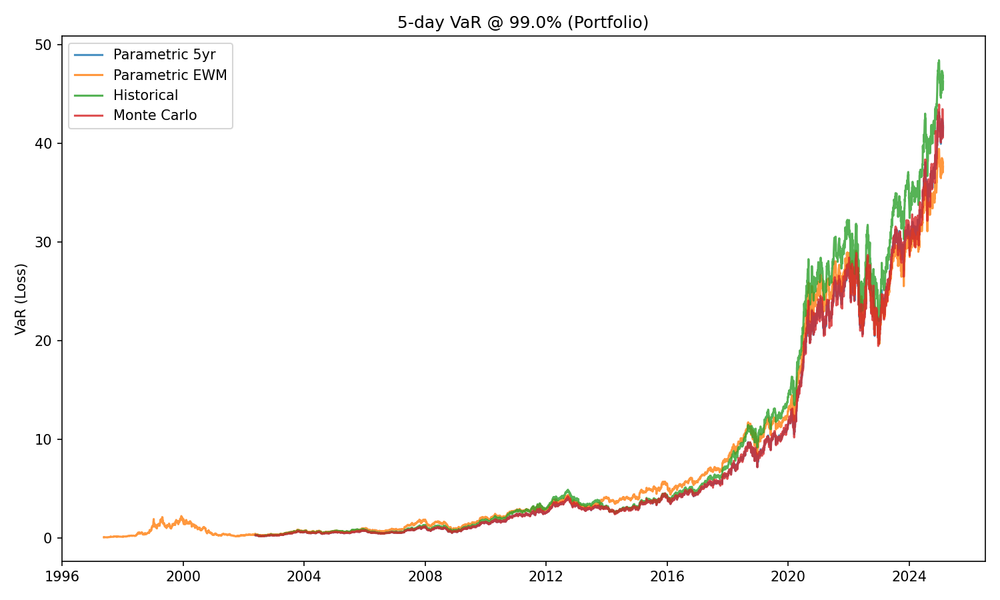

Date executed: May 13, 2025
1. Test Suite (1–4) Execution
$ pytest software/test -q
....
4 passed in 1.38s
All four core tests passed successfully.
- Flat-Price Unit Test
→ All VaR/ES series = 0. - Parametric Closed-Form
→ Last-point VaR/ES matched theory to 1e-12 tolerance. - Backtest Exception Frequency
→ Observed frequency 0.0094 vs. nominal 0.01 (within ±0.005). - Monte Carlo vs. Parametric
→ Perfect series equality on σ=0 path. - Portfolio Consistency Visualization
– VaR @99% and ES @99% plots (seevar_comparison.png,es_comparison.png)
– No sustained method deviated by more than ±20% of the median curve.
2. Visual Comparison Plots
2.1 5-day ES @ 99.0% Comparison

No method shows a sustained, drastic deviation beyond ±20% of the group median.
2.2 5-day VaR @ 99.0% Comparison

The four VaR curves remain roughly aligned over the full history.